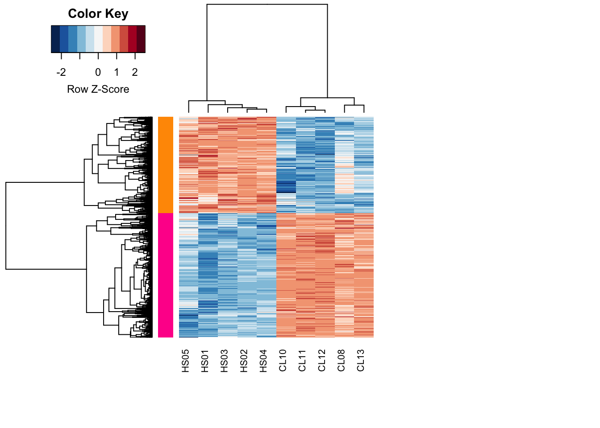
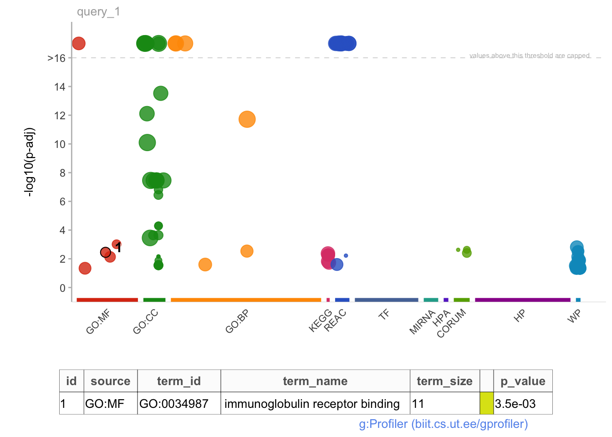
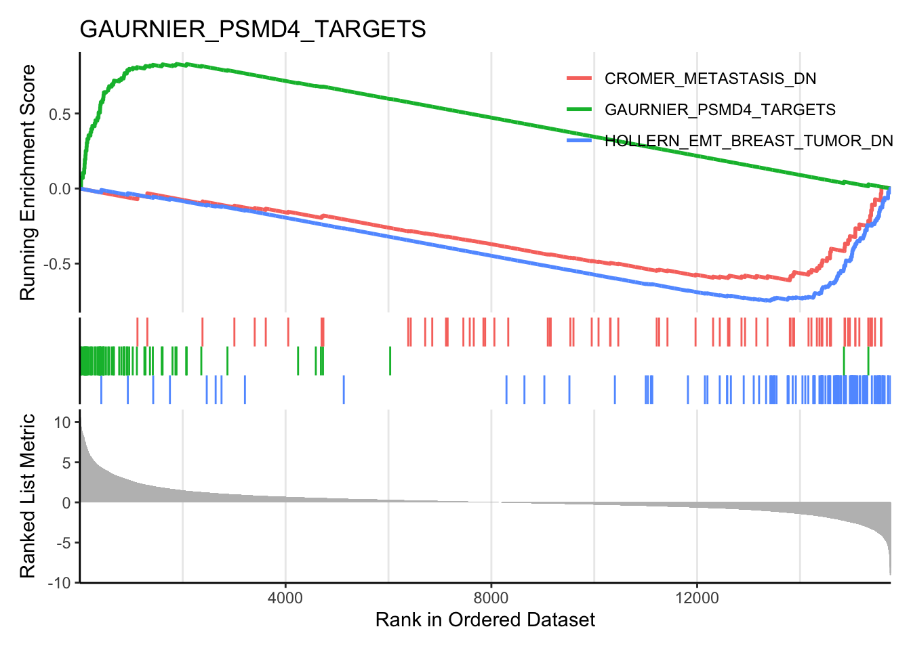
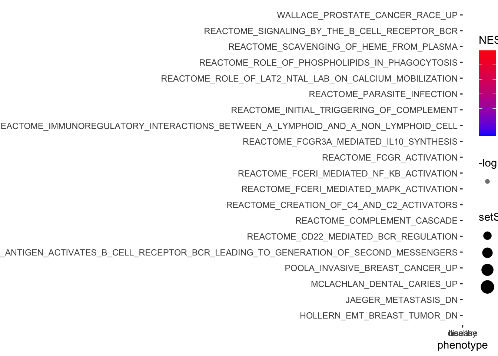

![]()
### load packages
library(rhdf5) # provides functions for handling hdf5 file formats (kallisto outputs bootstraps in this format)
library(tidyverse) # Hadley Wickham's collection of R packages for data science, which we will use throughout the course
library(tximport) # package for getting Kallisto results into R
library(ensembldb) # helps deal with ensembl
library(EnsDb.Hsapiens.v86) # replace with your organism-specific database package
library(here) # file path
library(datapasta) # paste data into R from clipboard
library(edgeR) # well known package for differential expression analysis, but we only use for the DGEList object and for normalization methods
library(matrixStats) # easily calculate stats on rows or columns of a data matrix
library(cowplot) # allows you to combine multiple plots in one figure
library(DT) # for making interactive tables
library(plotly) # for making interactive plots
library(gt) # A layered 'grammar of tables' - think ggplot, but for tables
library(limma) # venerable package for differential gene expression using linear modeling
library(edgeR)
library(RColorBrewer) # need colors to make heatmaps
# library(gameofthrones) #because...why not. Install using 'devtools::install_github("aljrico/gameofthrones")'
library(heatmaply) #for making interactive heatmaps using plotly
library(gplots)
# library(d3heatmap) # for making interactive heatmaps using D3
library(GSEABase) # functions and methods for Gene Set Enrichment Analysis
library(Biobase) # base functions for bioconductor; required by GSEABase
library(GSVA) # Gene Set Variation Analysis, a non-parametric and unsupervised method for estimating variation of gene set enrichment across samples.
library(gprofiler2) # tools for accessing the GO enrichment results using g:Profiler web resources
library(clusterProfiler) # provides a suite of tools for functional enrichment analysis
library(msigdbr) # access to msigdb collections directly within R
library(enrichplot) # great for making the standard GSEA enrichment plots
Step1: Check the quality of raw reads
### go to row reads folder
cd ~/onedrive/analysis/230907_DIY_Transcriptomics/data/fastq
### activate env
conda active rnaseq
### use fastqc to check the quality of fastq files
fastqc *.gz -t 4Step2: Mapping reads with Kallisto pseudoaligment
Download reference transciptome files from here
Build an index from reference fasta file
kallisto index -i Homo_sapiens.GRCh38.cdna.all.index Homo_sapiens.GRCh38.cdna.all.fa.gz- Map reads to the indexed reference host transcriptome


- Summarize output with Multiqc in a single summary html
multiqc -d .### first the healthy subjects (HS)
kallisto quant -i Homo_sapiens.GRCh38.cdna.all.index -o HS01 -t 4 --single -l 250 -s 30 SRR8668755.fastq.gz &> HS01.log
kallisto quant -i Homo_sapiens.GRCh38.cdna.all.index -o HS02 -t 4 --single -l 250 -s 30 SRR8668756.fastq.gz &> HS02.log
kallisto quant -i Homo_sapiens.GRCh38.cdna.all.index -o HS03 -t 4 --single -l 250 -s 30 SRR8668757.fastq.gz &> HS03.log
kallisto quant -i Homo_sapiens.GRCh38.cdna.all.index -o HS04 -t 4 --single -l 250 -s 30 SRR8668758.fastq.gz &> HS04.log
kallisto quant -i Homo_sapiens.GRCh38.cdna.all.index -o HS05 -t 4 --single -l 250 -s 30 SRR8668759.fastq.gz &> HS05.log
### then the cutaneous leishmaniasis (CL) patients
kallisto quant -i Homo_sapiens.GRCh38.cdna.all.index -o CL08 -t 4 --single -l 250 -s 30 SRR8668769.fastq.gz &> CL08.log
kallisto quant -i Homo_sapiens.GRCh38.cdna.all.index -o CL10 -t 4 --single -l 250 -s 30 SRR8668771.fastq.gz &> CL10.log
kallisto quant -i Homo_sapiens.GRCh38.cdna.all.index -o CL11 -t 4 --single -l 250 -s 30 SRR8668772.fastq.gz &> CL11.log
kallisto quant -i Homo_sapiens.GRCh38.cdna.all.index -o CL12 -t 4 --single -l 250 -s 30 SRR8668773.fastq.gz &> CL12.log
kallisto quant -i Homo_sapiens.GRCh38.cdna.all.index -o CL13 -t 4 --single -l 250 -s 30 SRR8668774.fastq.gz &> CL13.log
### Summarize outputs
multiqc -d .Step3: Import data into R
Load packages
Import study design files
### load study design
targets <- read_tsv(
here("learn", "230907_DIY_Transcriptomics", "studydesign.txt")
)
targets
## # A tibble: 10 × 3
## sample sra_accession group
## <chr> <chr> <chr>
## 1 HS01 SRR8668755 healthy
## 2 HS02 SRR8668756 healthy
## 3 HS03 SRR8668757 healthy
## 4 HS04 SRR8668758 healthy
## 5 HS05 SRR8668759 healthy
## 6 CL08 SRR8668769 disease
## 7 CL10 SRR8668771 disease
## 8 CL11 SRR8668772 disease
## 9 CL12 SRR8668773 disease
## 10 CL13 SRR8668774 disease
### create file paths for the abundance files
path <- file.path(
"learn", "230907_DIY_Transcriptomics", targets$sample, "abundance.tsv"
)
path
## [1] "learn/230907_DIY_Transcriptomics/HS01/abundance.tsv"
## [2] "learn/230907_DIY_Transcriptomics/HS02/abundance.tsv"
## [3] "learn/230907_DIY_Transcriptomics/HS03/abundance.tsv"
## [4] "learn/230907_DIY_Transcriptomics/HS04/abundance.tsv"
## [5] "learn/230907_DIY_Transcriptomics/HS05/abundance.tsv"
## [6] "learn/230907_DIY_Transcriptomics/CL08/abundance.tsv"
## [7] "learn/230907_DIY_Transcriptomics/CL10/abundance.tsv"
## [8] "learn/230907_DIY_Transcriptomics/CL11/abundance.tsv"
## [9] "learn/230907_DIY_Transcriptomics/CL12/abundance.tsv"
## [10] "learn/230907_DIY_Transcriptomics/CL13/abundance.tsv"
### make sure path is correct
all(file.exists(path))
## [1] TRUEGet organsim specific annotations
tx <- transcripts(
EnsDb.Hsapiens.v86, columns = c("tx_id", "gene_name")
) |>
as_tibble() |>
### need to change first column name to 'target_id'
rename(target_id = tx_id)
tx
## # A tibble: 216,741 × 7
## seqnames start end width strand target_id gene_name
## <fct> <int> <int> <int> <fct> <chr> <chr>
## 1 1 11869 14409 2541 + ENST00000456328 DDX11L1
## 2 1 12010 13670 1661 + ENST00000450305 DDX11L1
## 3 1 14404 29570 15167 - ENST00000488147 WASH7P
## 4 1 17369 17436 68 - ENST00000619216 MIR6859-1
## 5 1 29554 31097 1544 + ENST00000473358 MIR1302-2
## 6 1 30267 31109 843 + ENST00000469289 MIR1302-2
## 7 1 30366 30503 138 + ENST00000607096 MIR1302-2
## 8 1 34554 36081 1528 - ENST00000417324 FAM138A
## 9 1 35245 36073 829 - ENST00000461467 FAM138A
## 10 1 52473 53312 840 + ENST00000606857 OR4G4P
## # ℹ 216,731 more rows
### move transcrip ID the first column in the dataframe
tx <- select(tx, "target_id", "gene_name")Load transcript counts
txi_gene <- tximport(
path,
type = "kallisto",
tx2gene = tx,
txOut = FALSE, # How does the result change if this =FALSE vs =TRUE?
countsFromAbundance = "lengthScaledTPM",
ignoreTxVersion = TRUE
)
### take a look at the type of object
class(txi_gene)
## [1] "list"
names(txi_gene)
## [1] "abundance" "counts" "length"
## [4] "countsFromAbundance"Step4: Wrangling gene expression
### examine the data
tpm <- txi_gene$abundance
counts <- txi_gene$counts
### generate summary stats
tpm_stats <- transform(
tpm,
SD = rowSds(tpm),
AVG = rowMeans(tpm),
MED = rowMedians(tpm)
)
### look at the summary data
head(tpm_stats)
## X1 X2 X3 X4 X5 X6
## 5S_rRNA 0.0000000 0.0000000 0.000000 0.00000000 0.000000 0.0000000
## A1BG 6.3823340 6.7399420 3.842043 6.70710000 8.591181 14.6144150
## A1CF 0.0757872 0.0616752 0.214226 0.00859446 0.000000 0.0265036
## A2M 162.5622990 341.8312630 295.814803 261.47230600 169.453100 345.6983730
## A2ML1 109.6624900 80.6018680 90.356840 64.11152700 67.035650 52.5762220
## A2MP1 0.2237170 0.3143760 0.390022 0.15622800 0.122260 0.2700100
## X7 X8 X9 X10 SD
## 5S_rRNA 0.000000 0.0000000 0.00000000 0.0000000 0.00000000
## A1BG 18.182700 12.8662800 12.05296100 9.8268802 4.41172300
## A1CF 0.072777 0.1359934 0.03722713 0.0581254 0.06414927
## A2M 643.554440 341.8972850 324.80208900 415.9663840 135.78415021
## A2ML1 4.401309 5.1981760 1.75721000 15.1189910 39.78108982
## A2MP1 1.087410 0.7737610 0.68834900 0.6378640 0.31619850
## AVG MED
## 5S_rRNA 0.00000000 0.0000000
## A1BG 9.98058361 9.2090306
## A1CF 0.06909094 0.0599003
## A2M 330.30523424 333.3166760
## A2ML1 49.08202830 58.3438745
## A2MP1 0.46639970 0.3521990
### visualize it using scatter plot
ggplot(tpm_stats, aes(x = SD, y = MED)) +
geom_point(shape = 18, size = 2) +
geom_smooth(method = lm) +
geom_hex(show.legend = FALSE) +
labs(
y = "Median", x = "Standard deviation",
title = "Transcripts per million (TPM)",
subtitle = "unfiltered, non-normalized data",
caption = "DIYtranscriptomics - Spring 2020"
) +
theme_classic() +
theme_dark() +
theme_bw()
### capture sample labels from study design
sampleLabels <- targets$sample
### make DGElist from the counts
DGEList <- DGEList(txi_gene$counts)
DGEList
## An object of class "DGEList"
## $counts
## Sample1 Sample2 Sample3 Sample4 Sample5 Sample6
## 5S_rRNA 0.00000 0.00000 0.00000 0.000000 0.0000 0.00000
## A1BG 184.19070 245.13169 101.73418 79.204797 13.3335 682.72256
## A1CF 22.94477 23.53171 59.50815 1.064719 0.0000 12.98875
## A2M 11901.13136 31538.08430 19870.31859 7832.900974 667.1460 40967.58721
## A2ML1 15162.86062 14045.04908 11463.06052 3627.335147 498.4618 11767.57706
## Sample7 Sample8 Sample9 Sample10
## 5S_rRNA 0.0000 0.00000 0.00000 0.00000
## A1BG 391.5812 326.10430 397.97768 499.96534
## A1CF 16.4421 36.15938 12.89508 31.02343
## A2M 35158.3894 21982.61779 27205.95758 53686.20520
## A2ML1 454.1300 631.23251 277.98636 3685.37686
## 35366 more rows ...
##
## $samples
## group lib.size norm.factors
## Sample1 1 42300696 1
## Sample2 1 51775632 1
## Sample3 1 40485664 1
## Sample4 1 16661634 1
## Sample5 1 2191577 1
## Sample6 1 55389922 1
## Sample7 1 28800520 1
## Sample8 1 31632164 1
## Sample9 1 39464569 1
## Sample10 1 67827185 1
### get counts per million
cpm <- cpm(DGEList)
colSums(cpm)
## Sample1 Sample2 Sample3 Sample4 Sample5 Sample6 Sample7 Sample8
## 1e+06 1e+06 1e+06 1e+06 1e+06 1e+06 1e+06 1e+06
## Sample9 Sample10
## 1e+06 1e+06
log2_cpm <- cpm(DGEList, log=TRUE)
### connvert data matrix to dataframe
log2_cpm_df <- as_tibble(log2_cpm, rownames = "geneID")
### add sample names
colnames(log2_cpm_df) <- c("geneID", sampleLabels)
### pivot from wide to long
log2_cpm_df_pivot <- pivot_longer(
log2_cpm_df,
cols = HS01:CL13,
names_to = "samples",
values_to = "expression"
)
p1 <- ggplot(
log2_cpm_df_pivot,
aes(x = samples, y = expression, fill = samples)
) +
geom_violin(trim = FALSE, show.legend = FALSE) +
stat_summary(fun = "median",
geom = "point",
shape = 95,
size = 10,
color = "black",
show.legend = FALSE
) +
labs(
y = "log2 expression", x = "sample",
title = "Log2 Counts per Million (CPM)",
subtitle = "unfiltered, non-normalized",
caption = paste0("produced on ", Sys.time())
) +
theme_bw()
p1
- How many genes or transcripts have no read counts at all?
### filter data
table(rowSums(DGEList$counts==0)==10)
##
## FALSE TRUE
## 29373 5998
### how many genes had more than 1 CPM (TRUE) in at least 3 samples
### set cutoff
keepers <- rowSums(cpm>1) >= 5 # user defined
DGEList_filtered <- DGEList[keepers, ]
log2_cpm_filtered <- cpm(DGEList_filtered, log=TRUE)
log2_cpm_filtered_df <- as_tibble(log2_cpm_filtered, rownames = "geneID")
colnames(log2_cpm_filtered_df) <- c("geneID", sampleLabels)
log2_cpm_filtered_df_pivot <- pivot_longer(
log2_cpm_filtered_df,
cols = HS01:CL13,
names_to = "samples",
values_to = "expression"
)
p2 <- ggplot(
log2_cpm_filtered_df_pivot,
aes(x = samples, y = expression, fill = samples)
) +
geom_violin(trim = FALSE, show.legend = FALSE) +
stat_summary(
fun = "median",
geom = "point",
shape = 95,
size = 10,
color = "black",
show.legend = FALSE
) +
labs(y = "log2 expression", x = "sample",
title = "Log2 Counts per Million (CPM)",
subtitle = "filtered, non-normalized",
caption = paste0("produced on ", Sys.time())) +
theme_bw()
p2
### normalize data
DGEList_filtered_norm <- calcNormFactors(
DGEList_filtered, method = "TMM"
)
log2_cpm_filtered_norm <- cpm(
DGEList_filtered_norm, log = TRUE
)
log2_cpm_filtered_norm_df <- as_tibble(
log2_cpm_filtered_norm, rownames = "geneID"
)
colnames(log2_cpm_filtered_norm_df) <- c("geneID", sampleLabels)
log2_cpm_filtered_norm_df_pivot <- pivot_longer(
log2_cpm_filtered_norm_df,
cols = HS01:CL13,
names_to = "samples",
values_to = "expression"
)
p3 <- ggplot(
log2_cpm_filtered_norm_df_pivot,
aes(x = samples, y = expression, fill = samples)
) +
geom_violin(trim = FALSE, show.legend = FALSE) +
stat_summary(
fun = "median",
geom = "point",
shape = 95,
size = 10,
color = "black",
show.legend = FALSE
) +
labs(
y = "log2 expression", x = "sample",
title = "Log2 Counts per Million (CPM)",
subtitle = "filtered, TMM normalized",
caption = paste0("produced on ", Sys.time())
) +
theme_bw()
### combine plots
plot_grid(
p1, p2, p3,
labels = c('A', 'B', 'C'),
label_size = 12
)
Step5: Data exploration with multivariate analysis
### Identify variables of interest in study design file
group <- targets$group
group <- factor(group)
group
## [1] healthy healthy healthy healthy healthy disease disease disease disease
## [10] disease
## Levels: disease healthyHierarchical clustering
### calculate distance methods (e.g. switch from 'maximum' to 'euclidean')
distance <- dist(
t(log2_cpm_filtered_norm), method = "maximum"
)
### other distance methods are "euclidean", maximum", "manhattan", "canberra", "binary" or "minkowski"
clusters <- hclust(distance, method = "average")
### other agglomeration methods are "ward.D", "ward.D2", "single", "complete", "average", "mcquitty", "median", or "centroid"
plot(clusters, labels=sampleLabels)
Principal compoent analysis
pca_res <- prcomp(
t(log2_cpm_filtered_norm),
scale. = FALSE, retx = TRUE
)
### prints variance summary for all principal components.
summary(pca_res)
## Importance of components:
## PC1 PC2 PC3 PC4 PC5 PC6
## Standard deviation 113.9821 49.8074 33.42376 27.08082 26.40296 22.23750
## Proportion of Variance 0.6656 0.1271 0.05723 0.03757 0.03571 0.02533
## Cumulative Proportion 0.6656 0.7927 0.84993 0.88750 0.92322 0.94855
## PC7 PC8 PC9 PC10
## Standard deviation 20.50645 17.71945 16.42366 1.816e-13
## Proportion of Variance 0.02154 0.01609 0.01382 0.000e+00
## Cumulative Proportion 0.97010 0.98618 1.00000 1.000e+00
### look at the PCA result (pca.res)
ls(pca_res)
## [1] "center" "rotation" "scale" "sdev" "x"
### $rotation shows you how much each gene influenced each PC (called 'scores')
head(pca_res$rotation)
## PC1 PC2 PC3 PC4 PC5
## A1BG 0.006058601 -0.005265865 0.0030322868 0.008759217 0.0021903806
## A2M 0.004897345 0.002459393 -0.0029437295 0.010128989 0.0010754828
## A2ML1 -0.015426376 0.002131922 0.0236833694 0.012776801 0.0151330784
## A2MP1 0.008361769 0.005416383 -0.0080073403 -0.004989098 0.0019137300
## A4GALT -0.004861196 -0.010071400 -0.0040747825 0.004365382 -0.0073287027
## AAAS 0.002247684 -0.005546829 -0.0003891962 0.005401109 -0.0008667994
## PC6 PC7 PC8 PC9 PC10
## A1BG 0.002600255 1.165903e-02 0.002109927 0.006017461 -0.62642253
## A2M -0.003082754 -2.988929e-03 0.007583352 -0.002958490 -0.07649096
## A2ML1 -0.013272183 -1.389944e-02 0.008501332 0.020687796 0.29435235
## A2MP1 -0.002415560 1.626299e-03 0.011281299 -0.005577339 -0.50451276
## A4GALT -0.009698589 6.199904e-05 0.012467687 0.004110126 -0.31572438
## AAAS 0.006991981 3.783003e-03 0.004628266 0.003568768 -0.14061416
### 'x' shows you how much each sample influenced each PC (called 'loadings')
pca_res$x
## PC1 PC2 PC3 PC4 PC5 PC6
## Sample1 -116.29139 38.2334807 21.154790 -31.204512 24.3342557 -5.032445
## Sample2 -98.08443 28.5182187 6.488451 20.455248 -24.7150117 -5.625522
## Sample3 -98.57599 46.3377421 -21.880766 -22.638077 26.9619112 8.312240
## Sample4 -102.83232 27.1997919 -10.521681 36.884584 -34.6489813 11.837625
## Sample5 -119.48548 -130.0448432 -8.771308 -8.078419 0.7747427 -2.609032
## Sample6 76.83934 -13.0282654 65.541177 34.668976 32.4966464 9.756467
## Sample7 114.80802 0.9427947 -66.411954 27.226075 30.8708143 -6.756527
## Sample8 122.14072 -0.8992447 -2.600281 -31.000051 -26.0328136 19.278692
## Sample9 129.23356 -4.8764679 3.983424 -16.285254 -13.4446636 25.667565
## Sample10 92.24799 7.6167930 13.018146 -10.028570 -16.5969001 -54.829063
## PC7 PC8 PC9 PC10
## Sample1 37.289161 -8.2755495 9.2338103 6.432316e-13
## Sample2 9.263960 37.6085903 -14.4523481 7.064106e-14
## Sample3 -40.584484 0.6580365 -8.3486393 3.455381e-13
## Sample4 -3.089166 -28.1333136 11.4331050 -5.619926e-14
## Sample5 -2.014396 -0.2124505 -0.6860841 -1.205842e-13
## Sample6 -10.563273 2.1965073 5.3204553 -6.485607e-14
## Sample7 15.193876 4.0838551 4.1812220 -2.588419e-13
## Sample8 -5.936520 15.6564254 28.6671255 -1.908206e-13
## Sample9 11.836127 -13.5624080 -32.5109827 -3.271781e-13
## Sample10 -11.395285 -10.0196929 -2.8376640 1.788202e-13
### A screeplot is a standard way to view eigenvalues for each PCA
screeplot(pca_res) 
### sdev^2 captures these eigenvalues from the PCA result
pc_var <- pca_res$sdev^2
### use these eigenvalues to calculate the percentage variance explained by each PC
pc_per <- round(pc_var/sum(pc_var)*100, 1)
pc_per
## [1] 66.6 12.7 5.7 3.8 3.6 2.5 2.2 1.6 1.4 0.0- Can we figure out the identify of outlier?
### visualize PCA result
pca_res_df <- as_tibble(pca_res$x) |>
bind_cols(targets) |>
mutate(group = factor(group))
pca_plot1 <- pca_res_df |>
ggplot(
aes(x = PC1, y = PC2, label = sample, color = group)
) +
geom_point(size = 4) +
stat_ellipse() +
xlab(paste0("PC1 (", pc_per[1], "%", ")")) +
ylab(paste0("PC2 (", pc_per[2], "%", ")")) +
labs(title = "PCA plot",
caption = paste0("produced on ", Sys.time())) +
coord_fixed() +
theme_bw()
pca_plot1
- Another way to view PCA laodings to understand impact of each sample on each pricipal component
pca_res_df <- pca_res$x[, 1:4] |>
as_tibble() |>
add_column(
sample = sampleLabels,
group = group
)
### dataframe to be pivoted
pca_pivot <- pivot_longer(
pca_res_df,
cols = PC1:PC4,
names_to = "PC",
values_to = "loadings"
)
### plot
pca_plot2 <- ggplot(pca_pivot) +
aes(x = sample, y = loadings, fill = group) +
geom_bar(stat = "identity") +
facet_wrap(~PC) +
labs(
title = "PCA 'small multiples' plot",
caption = paste0("produced on ", Sys.time())
) +
theme_bw() +
coord_flip()
pca_plot2
### combine plot
# plot_grid(pca_plot1, pca_plot2)# make columns comparing each of the averages above that you're interested in
mydata_df <- mutate(
log2_cpm_filtered_norm_df,
healthy.AVG = (HS01 + HS02 + HS03 + HS04 + HS05)/5,
disease.AVG = (CL08 + CL10 + CL11 + CL12 + CL13)/5,
LogFC = (disease.AVG - healthy.AVG)
) |>
mutate_if(is.numeric, round, 2)
### sort data
mydata_sort <- mydata_df |>
arrange(desc(LogFC)) |>
select(geneID, LogFC)
mydata_sort
## # A tibble: 15,765 × 2
## geneID LogFC
## <chr> <dbl>
## 1 IGLC3 10.6
## 2 MMP1 10.4
## 3 IGKV1-5 10.2
## 4 IGLV3-1 9.96
## 5 IGLV3-19 9.9
## 6 IGLC1 9.88
## 7 IGKV1D-39 9.87
## 8 IGLL5 9.85
## 9 IGKV1D-33 9.83
## 10 IGLV2-8 9.65
## # ℹ 15,755 more rows
### filter data
mydata_filter <- mydata_df |>
filter(
geneID == "MMP1" | geneID == "GZMB" | geneID == "IL1B" | geneID == "GNLY" | geneID == "IFNG"
| geneID == "CCL4" | geneID == "PRF1" | geneID == "APOBEC3A" | geneID == "UNC13A"
) |>
select(geneID, healthy.AVG, disease.AVG, LogFC) |>
arrange(desc(LogFC))
mydata_filter
## # A tibble: 9 × 4
## geneID healthy.AVG disease.AVG LogFC
## <chr> <dbl> <dbl> <dbl>
## 1 MMP1 1.44 11.9 10.4
## 2 IFNG -3.65 4.42 8.07
## 3 CCL4 -1.75 6.14 7.89
## 4 GZMB -0.58 6.47 7.05
## 5 GNLY 0.98 7.17 6.19
## 6 IL1B 0.63 6.48 5.85
## 7 PRF1 1.03 6.64 5.61
## 8 APOBEC3A 0.27 5.6 5.33
## 9 UNC13A -0.78 1.95 2.73### Produce publication-quality tables using `gt` package
mydata_filter |>
gt() |>
fmt_number(columns = 2:4, decimals = 1) |>
tab_header(
title = md("**Regulators of skin pathogenesis**"),
subtitle = md("*during cutaneous leishmaniasis*")
) |>
tab_footnote(
footnote = "Deletion or blockaid ameliorates disease in mice",
locations = cells_body(columns = geneID, rows = c(6, 7))
) |>
tab_footnote(
footnote = "Associated with treatment failure in multiple studies",
locations = cells_body(columns = geneID, rows = c(2:9))
) |>
tab_footnote(
footnote = "Implicated in parasite control",
locations = cells_body(columns = geneID, rows = c(2))
) |>
tab_source_note(
source_note = md("Reference: Amorim *et al*., (2019). DOI: 10.1126/scitranslmed.aar3619")
)| Regulators of skin pathogenesis | |||
| during cutaneous leishmaniasis | |||
| geneID | healthy.AVG | disease.AVG | LogFC |
|---|---|---|---|
| MMP1 | 1.4 | 11.9 | 10.4 |
| IFNG1,2 | −3.6 | 4.4 | 8.1 |
| CCL41 | −1.8 | 6.1 | 7.9 |
| GZMB1 | −0.6 | 6.5 | 7.0 |
| GNLY1 | 1.0 | 7.2 | 6.2 |
| IL1B3,1 | 0.6 | 6.5 | 5.8 |
| PRF13,1 | 1.0 | 6.6 | 5.6 |
| APOBEC3A1 | 0.3 | 5.6 | 5.3 |
| UNC13A1 | −0.8 | 1.9 | 2.7 |
| Reference: Amorim et al., (2019). DOI: 10.1126/scitranslmed.aar3619 | |||
| 1 Associated with treatment failure in multiple studies | |||
| 2 Implicated in parasite control | |||
| 3 Deletion or blockaid ameliorates disease in mice | |||
- Make an interactive table using the
DTpackage
# datatable(
# mydata_df[, c(1, 12:14)],
# extensions = c('KeyTable', "FixedHeader"),
# filter = 'top',
# options = list(keys = TRUE,
# searchHighlight = TRUE,
# pageLength = 10,
# # dom = "Blfrtip",
# # buttons = c("copy", "csv", "excel"),
# lengthMenu = c("10", "25", "50", "100"))
# )- Make an interactive scatter plot with
plotly
myplot <- ggplot(mydata_df) +
aes(x=healthy.AVG, y=disease.AVG,
text = paste("Symbol:", geneID)) +
geom_point(shape=16, size=1) +
ggtitle("disease vs. healthy") +
theme_bw()
myplot
# ggplotly(myplot)Step6: Differential gene expression
Set up design matrix
group <- factor(targets$group)
design <- model.matrix(~0 + group)
colnames(design) <- levels(group)
# NOTE: if you need a paired analysis (a.k.a.'blocking' design) or have a batch effect, the following design is useful
# design <- model.matrix(~block + treatment)
# this is just an example. 'block' and 'treatment' would need to be objects in your environmentModel mean-variance trend and fit linear model to data
### Use VOOM function from Limma package to model the mean-variance relationship
head(DGEList_filtered_norm)
## An object of class "DGEList"
## $counts
## Sample1 Sample2 Sample3 Sample4 Sample5 Sample6
## A1BG 184.19070 245.13169 101.73418 79.20480 13.3334957 682.72256
## A2M 11901.13136 31538.08430 19870.31859 7832.90097 667.1460374 40967.58721
## A2ML1 15162.86062 14045.04908 11463.06052 3627.33515 498.4617540 11767.57706
## A2MP1 29.31478 51.91491 46.89141 8.37674 0.8615391 57.27197
## A4GALT 128.32345 355.39448 131.42493 75.43359 30.6454026 112.79123
## AAAS 269.07806 457.62142 257.49394 147.56154 27.9749726 636.62246
## Sample7 Sample8 Sample9 Sample10
## A1BG 391.58119 326.10430 397.9777 499.9653
## A2M 35158.38935 21982.61779 27205.9576 53686.2052
## A2ML1 454.12997 631.23251 277.9864 3685.3769
## A2MP1 106.33010 89.04506 103.1984 147.3506
## A4GALT 87.64872 88.03357 62.6173 230.0622
## AAAS 382.02897 412.70476 446.8081 509.4904
##
## $samples
## group lib.size norm.factors
## Sample1 1 42300696 0.9838341
## Sample2 1 51775632 1.0056785
## Sample3 1 40485664 1.1055948
## Sample4 1 16661634 1.0332639
## Sample5 1 2191577 1.0154852
## Sample6 1 55389922 0.8810033
## Sample7 1 28800520 1.0117840
## Sample8 1 31632164 1.0093077
## Sample9 1 39464569 0.9639270
## Sample10 1 67827185 1.0046274
v_DEGList_filtered_norm <- voom(DGEList_filtered_norm, design, plot = TRUE)
# fit a linear model to your data
fit <- lmFit(v_DEGList_filtered_norm, design)
### contrast matrix
contrast_matrix <- makeContrasts(infection = disease - healthy,
levels=design)
### extract the linear model fit
fits <- contrasts.fit(fit, contrast_matrix)
### get bayesian stats for the linear model fit
ebFit <- eBayes(fits)
#write.fit(ebFit, file="lmfit_results.txt")
### top table to view DEGs
TopHits <- topTable(ebFit, adjust ="BH", coef=1, number=40000, sort.by="logFC")
### convert to a tibble
TopHits_df <- TopHits |>
as_tibble(rownames = "geneID")
TopHits_df
## # A tibble: 15,765 × 7
## geneID logFC AveExpr t P.Value adj.P.Val B
## <chr> <dbl> <dbl> <dbl> <dbl> <dbl> <dbl>
## 1 MMP1 10.8 6.65 13.4 0.0000000182 0.00000123 10.0
## 2 IGLC3 10.3 3.49 7.50 0.00000815 0.0000778 4.06
## 3 IGKV1D-33 10.2 1.12 9.29 0.000000913 0.0000160 6.11
## 4 IGKV2D-28 10.1 0.898 9.50 0.000000723 0.0000137 6.32
## 5 IGLV3-25 10.0 0.242 6.89 0.0000186 0.000147 3.27
## 6 IGLV3-1 10.0 1.75 11.8 0.0000000715 0.00000281 8.36
## 7 IGKV1-5 9.93 3.36 13.8 0.0000000124 0.00000101 10.0
## 8 IGHV1-3 9.89 0.447 6.24 0.0000468 0.000302 2.37
## 9 IGLV3-19 9.84 2.18 6.93 0.0000175 0.000140 3.33
## 10 IGHV3-21 9.80 1.42 9.00 0.00000128 0.0000200 5.80
## # ℹ 15,755 more rows
Limma outputs
- TopTable (from Limma) outputs a few different stats:
- logFC, AveExpr, and P.Value should be self-explanatory
- adj.P.Val is your adjusted P value, also known as an FDR (if BH method was used for multiple testing correction)
- B statistic is the log-odds that that gene is differentially expressed. If B = 1.5, then log odds is e^1.5, where e is euler’s constant (approx. 2.718). So, the odds of differential expression os about 4.8 to 1
- t statistic is ratio of the logFC to the standard error (where the error has been moderated across all genes…because of Bayesian approach)
### volcano plot
vplot <- TopHits_df |>
ggplot(
aes(y = -log10(adj.P.Val), x = logFC, text = paste("Symbol:", geneID))
) +
geom_point(size = 2) +
geom_hline(yintercept = -log10(0.01), linetype = "longdash", colour = "grey", linewidth = 1) +
geom_vline(xintercept = 1, linetype = "longdash", colour = "#BE684D", linewidth = 1) +
geom_vline(xintercept = -1, linetype = "longdash", colour = "#2C467A", linewidth = 1) +
# annotate("rect", xmin = 1, xmax = 12, ymin = -log10(0.01), ymax = 7.5, alpha=.2, fill="#BE684D") +
# annotate("rect", xmin = -1, xmax = -12, ymin = -log10(0.01), ymax = 7.5, alpha=.2, fill="#2C467A") +
labs(title = "Volcano plot",
subtitle = "Cutaneous leishmaniasis",
caption = paste0("produced on ", Sys.time())) +
theme_bw()
vplot
### pull out DEGs and make venn diagram
results <- decideTests(
ebFit, method = "global", adjust.method = "BH", p.value = 0.01, lfc = 2
)
head(results)
## TestResults matrix
## Contrasts
## infection
## A1BG 0
## A2M 0
## A2ML1 -1
## A2MP1 0
## A4GALT 0
## AAAS 0
summary(results)
## infection
## Down 1012
## NotSig 13446
## Up 1307
vennDiagram(results, include="up")
### retrieve expression data for DEGs
head(v_DEGList_filtered_norm$E)
## Sample1 Sample2 Sample3 Sample4 Sample5 Sample6
## A1BG 2.1498709 2.237982296 1.19157184 2.2109278 2.6359548 3.8074408
## A2M 8.1597752 9.242459704 8.79420169 8.8297563 8.2288005 9.7134419
## A2ML1 8.5092054 8.075454826 8.00060559 7.7192264 7.8086463 7.9138199
## A2MP1 -0.4811408 0.009534871 0.08239155 -0.9556369 -0.7089007 0.2435267
## A4GALT 1.6301549 2.772935178 1.55941146 2.1409994 3.8068082 1.2151214
## AAAS 2.6954627 3.137215647 2.52703139 3.1043863 3.6774835 3.7066558
## Sample7 Sample8 Sample9 Sample10
## A1BG 3.750084 3.354713 3.3888732 2.876674
## A2M 10.236678 9.427422 9.4821796 9.621825
## A2ML1 3.963625 4.306483 2.8719810 5.757340
## A2MP1 1.874250 1.487855 1.4467684 1.117544
## A4GALT 1.596943 1.471466 0.7304817 1.758560
## AAAS 3.714501 3.694027 3.5556433 2.903874
colnames(v_DEGList_filtered_norm$E) <- sampleLabels
diffGenes <- v_DEGList_filtered_norm$E[results[,1] !=0,]
head(diffGenes)
## HS01 HS02 HS03 HS04 HS05 CL08 CL10
## A2ML1 8.509205 8.075455 8.000606 7.719226 7.808646 7.913820 3.9636246
## AADAC 3.783598 3.145125 3.421001 3.846583 4.124090 2.241617 -3.5057299
## AADACL2 6.884775 7.025967 6.096531 6.700546 6.104662 5.215819 -5.8649243
## AARD 2.817882 1.719728 2.562007 2.090062 2.784928 1.028134 0.2785801
## ABCA10 4.429922 4.330043 6.261231 3.871370 2.785400 2.261820 2.9336235
## ABCA12 8.609129 7.810834 7.884251 7.603805 7.963791 7.338358 3.3247149
## CL11 CL12 CL13
## A2ML1 4.3064835 2.8719810 5.7573398
## AADAC 0.1777154 -0.9997370 -0.5843452
## AADACL2 2.9288016 2.0251967 3.5424241
## AARD 0.2142361 -0.4255113 0.1288021
## ABCA10 2.4838643 2.4430992 0.6882190
## ABCA12 5.2844659 4.7055495 6.6999992
dim(diffGenes)
## [1] 2319 10
#convert DEGs to a dataframe using as_tibble
diffGenes_df <- as_tibble(diffGenes, rownames = "geneID")
### create interactive tables to display DEGs
# datatable(diffGenes_df,
# extensions = c('KeyTable', "FixedHeader"),
# caption = 'Table 1: DEGs in cutaneous leishmaniasis',
# options = list(keys = TRUE, searchHighlight = TRUE, pageLength = 10, lengthMenu = c("10", "25", "50", "100"))) |>
# formatRound(columns=c(2:11), digits=2)
### write DEGs to a file
# write_tsv(diffGenes_df, "DiffGenes.txt")
#NOTE: this .txt file can be directly used for input into other clustering or network analysis tools (e.g., String, Clust (https://github.com/BaselAbujamous/clust, etc.)Step7: Module identification
heatcolors <- rev(brewer.pal(name="RdBu", n=11))
#cluster rows by pearson correlation
clustRows <- hclust(
as.dist(1-cor(t(diffGenes), method="pearson")),
method="complete"
)
#cluster columns by pearson correlation
clustColumns <- hclust(
as.dist(1-cor(diffGenes, method="spearman")),
method="complete"
)
module_assign <- cutree(clustRows, k=2)
module_color <- rainbow(length(unique(module_assign)), start=0.1, end=0.9)
module_color <- module_color[as.vector(module_assign)]
heatmap.2(
diffGenes,
Rowv = as.dendrogram(clustRows),
Colv = as.dendrogram(clustColumns),
RowSideColors = module_color,
col = heatcolors, scale = 'row', labRow = NA,
density.info = "none", trace = "none",
cexRow = 1, cexCol = 1, margins = c(8, 20)
)
modulePick <- 2
Module_up <- diffGenes[names(module_assign[module_assign %in% modulePick]),]
hrsub_up <- hclust(
as.dist(1 - cor(t(Module_up), method = "pearson")),
method = "complete"
)
heatmap.2(
Module_up,
Rowv=as.dendrogram(hrsub_up),
Colv=NA,
labRow = NA,
col=heatcolors, scale="row",
density.info="none", trace="none",
RowSideColors=module_color[module_assign%in%modulePick], margins=c(8,20)
)
modulePick <- 1
Module_down <- diffGenes[names(module_assign[module_assign %in% modulePick]),]
hrsub_down <- hclust(
as.dist(1 - cor(t(Module_down), method = "pearson")),
method = "complete"
)
heatmap.2(Module_down,
Rowv=as.dendrogram(hrsub_down),
Colv=NA,
labRow = NA,
col=heatcolors, scale="row",
density.info="none", trace="none",
RowSideColors=module_color[module_assign%in%modulePick], margins=c(8,20))
Step8: Functional enrichment analysis
Go enrichment analysis
### carry out GO enrichment using gProfiler2
#### use topTable result to pick the top genes for carrying out a Gene Ontology (GO) enrichment analysis
myTopHits <- topTable(
ebFit,
adjust = "BH",
coef = 1,
number = 50,
sort.by = "logFC"
)
### use the 'gost' function from the gprofiler2 package to run GO enrichment analysis
gost_res <- gost(
rownames(myTopHits),
organism = "hsapiens",
correction_method = "fdr"
)
### produce an interactive manhattan plot of enriched GO terms
gostplot(gost_res, interactive = TRUE, capped = T)
### produce a publication quality static manhattan plot with specific GO terms highlighted
mygostplot <- gostplot(
gost_res,
interactive = FALSE,
capped = TRUE #set interactive=FALSE to get plot for publications
)
### rerun the above gostplot function with 'interactive=F' and save to an object 'mygostplot'
publish_gostplot(
mygostplot, #your static gostplot from above
highlight_terms = c("GO:0034987"),
filename = NULL,
width = NA,
height = NA)

### generate a table of gost results
publish_gosttable(
gost_res,
highlight_terms = NULL,
use_colors = TRUE,
show_columns = c("source", "term_name", "term_size", "intersection_size"),
filename = NULL,
ggplot=TRUE)
# now repeat the above steps using only genes from a single module from the step 6 script, by using `rownames(myModule)`
# what is value in breaking up DEGs into modules for functional enrichment analysis?Perform GSEA using clusterProfiler
There are a few ways to get msigDB collections into R:
- Option1: download directly from msigdb and load from your computer. can use the ‘read.gmt’ function from clusterProfiler package to create a dataframe. alternatively, you can read in using ‘getGmt’ function from GSEABase package if you need a GeneSetCollection object
c2cp <- read.gmt("/Users/.../MSigDB/c2.cp.v7.1.symbols.gmt")- Option2: use the msigdb package to access up-to-date collections. this option has the additional advantage of providing access to species-specific collections are also retrieved as tibbles
msigdbr_species()
## # A tibble: 20 × 2
## species_name species_common_name
## <chr> <chr>
## 1 Anolis carolinensis Carolina anole, green anole
## 2 Bos taurus bovine, cattle, cow, dairy cow, domestic cat…
## 3 Caenorhabditis elegans <NA>
## 4 Canis lupus familiaris dog, dogs
## 5 Danio rerio leopard danio, zebra danio, zebra fish, zebr…
## 6 Drosophila melanogaster fruit fly
## 7 Equus caballus domestic horse, equine, horse
## 8 Felis catus cat, cats, domestic cat
## 9 Gallus gallus bantam, chicken, chickens, Gallus domesticus
## 10 Homo sapiens human
## 11 Macaca mulatta rhesus macaque, rhesus macaques, Rhesus monk…
## 12 Monodelphis domestica gray short-tailed opossum
## 13 Mus musculus house mouse, mouse
## 14 Ornithorhynchus anatinus duck-billed platypus, duckbill platypus, pla…
## 15 Pan troglodytes chimpanzee
## 16 Rattus norvegicus brown rat, Norway rat, rat, rats
## 17 Saccharomyces cerevisiae baker's yeast, brewer's yeast, S. cerevisiae
## 18 Schizosaccharomyces pombe 972h- <NA>
## 19 Sus scrofa pig, pigs, swine, wild boar
## 20 Xenopus tropicalis tropical clawed frog, western clawed frog
### Gets all collections/signatures with human gene IDs
hs_gsea <- msigdbr(species = "Homo sapiens")
### Take a look at the categories and subcategories of signatures available to you
hs_gsea |>
distinct(gs_cat, gs_subcat) |>
arrange(gs_cat, gs_subcat)
## # A tibble: 23 × 2
## gs_cat gs_subcat
## <chr> <chr>
## 1 C1 ""
## 2 C2 "CGP"
## 3 C2 "CP"
## 4 C2 "CP:BIOCARTA"
## 5 C2 "CP:KEGG"
## 6 C2 "CP:PID"
## 7 C2 "CP:REACTOME"
## 8 C2 "CP:WIKIPATHWAYS"
## 9 C3 "MIR:MIRDB"
## 10 C3 "MIR:MIR_Legacy"
## # ℹ 13 more rows
### Choose a specific msigdb collection/subcollection
hs_gsea_c2 <- msigdbr(
### change depending on species your data came from
species = "Homo sapiens",
category = "C2"
) |>
###just get the columns corresponding to signature name and gene symbols of genes in each signature
select(gs_name, gene_symbol)
### Pull out just the columns corresponding to gene symbols and LogFC for at least one pairwise comparison for the enrichment analysis
mydata_df_sub <- select(mydata_df, geneID, LogFC)
### Construct a named vector
mydata_gsea <- mydata_df_sub$LogFC
names(mydata_gsea) <- as.character(mydata_df_sub$geneID)
mydata_gsea <- sort(mydata_gsea, decreasing = TRUE)
### Run GSEA using the 'GSEA' function from clusterProfiler
myGSEA_res <- GSEA(mydata_gsea, TERM2GENE=hs_gsea_c2, verbose=FALSE)
myGSEA_df <- as_tibble(myGSEA_res@result)
### View results as an interactive table
# datatable(
# myGSEA_df,
# extensions = c('KeyTable', "FixedHeader"),
# caption = 'Signatures enriched in leishmaniasis',
# options = list(
# keys = TRUE,
# searchHighlight = TRUE,
# pageLength = 10,
# lengthMenu = c("10", "25", "50", "100")
# )
# ) |>
# formatRound(columns = c(2:10), digits = 2)
### Create enrichment plots using the enrichplot package
gseaplot2(
myGSEA_res,
### can choose multiple signatures to overlay in this plot
geneSetID = c(6, 47, 262),
### can set this to FALSE for a cleaner plot
pvalue_table = FALSE,
### can also turn off this title
title = myGSEA_res$Description[47]
) 
### Add a variable to this result that matches enrichment direction with phenotype
myGSEA_df <- myGSEA_df |>
mutate(
phenotype = case_when(
NES > 0 ~ "disease",
NES < 0 ~ "healthy"
)
)
### Create 'bubble plot' to summarize y signatures across x phenotypes
ggplot(myGSEA_df[1:20,], aes(x=phenotype, y=ID)) +
geom_point(aes(size=setSize, color = NES, alpha=-log10(p.adjust))) +
scale_color_gradient(low="blue", high="red") +
theme_bw()
Competitive GSEA using CAMERA
For competitive tests the null hypothesis is that genes in the set are, at most, as often differentially expressed as genes outside the set.
### Create a few signatures to test in our enrichment analysis
### if your own data is from mice, wrap this in 'toupper()' to make gene symbols all caps
mySig <- rownames(myTopHits)
mySig2 <- sample(
(rownames(v_DEGList_filtered_norm$E)),
size = 50, replace = FALSE
)
collection <- list(real = mySig, fake = mySig2)
###Test for enrichment using CAMERA
camera_res <- camera(v_DEGList_filtered_norm$E, collection, design, contrast_matrix[,1])
camera_df <- as_tibble(camera_res, rownames = "setName")
camera_df
## # A tibble: 2 × 5
## setName NGenes Direction PValue FDR
## <chr> <dbl> <chr> <dbl> <dbl>
## 1 real 50 Up 5.85e-20 1.17e-19
## 2 fake 50 Down 6.15e- 1 6.15e- 1Self-contained GSEA using ROAST
For self-contained the null hypothesis is that no genes in the set are differentially expressed.